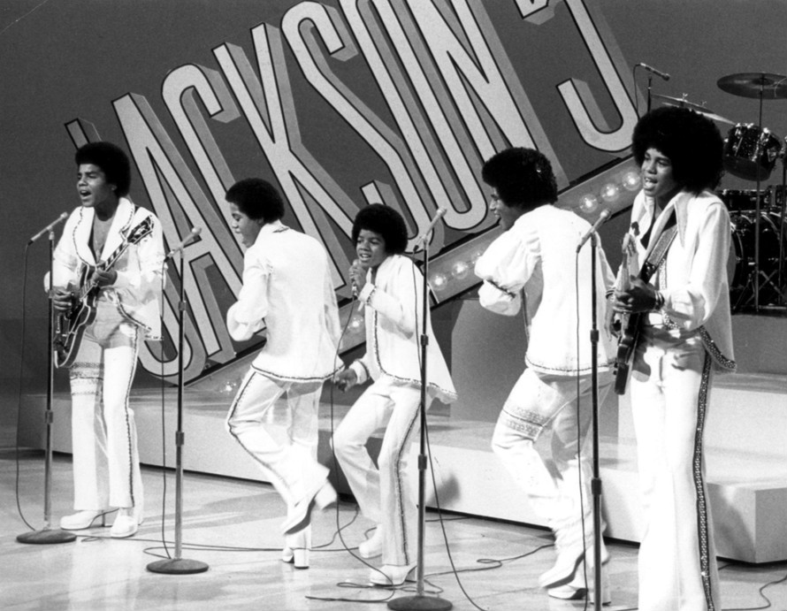

The Legend
"Music has been my outlet, my gift to all of the lovers in this world."

Michael Joseph Jackson is born to Katherine and Joe Jackson in Gary, Ind. His older siblings are Rebbie, Jackie, Tito, Jermaine, LaToya and Marlon.
Michael, Marlon, Jackie, Tito and Jermaine combine to form a band. At first, their father does not approve, but later changes his mind and manages the band. Jackson sings lead vocal on most of the songs.
Motown signs The Jackson 5.
The song "I Want You Back" jumps to the number-one singles spot. "ABC (1970)," "The Love You Save" and "I'll Be There" follow suit.
Jackson goes solo, and his singles "Got to Be There," "Rockin' Robin" and "I Wanna Be Where You Are" storm the charts.
Jackson makes his film debut as the Scarecrow in The Wiz, an urban retelling of the classic film The Wizard Of Oz. Diana Ross co-stars as Dorothy. Jackson is said to wear his makeup long after production hours.
Jackson records Off The Wall, his first album as a solo artist. The singles "Don't Stop 'Til You Get Enough" and "Rock With You" both shoot to number-one hits.
Jackson nabs his first Grammy Award for Best R&B Male Vocal Performance.
Jackson releases the album Thriller, and it tops the charts for 37 weeks. Seven singles dash into the top 10, including "Billie Jean," "Beat It," "Thriller" and "Wanna Be Startin' Somethin'." The extended video sequence on "Thriller" has Jackson morph into a werewolf. Jackson unveils his signature dance move, the moonwalk.
Questions arise about Jackson's changing appearance, and some wonder if the singer has had plastic surgery. He builds a home on 2,700 acres in Central California, complete with its own amusement park rides, and calls it Neverland.
Jackson and Lionel Richie pen "We Are The World," with the proceeds from sales of the single slated for hunger relief in Africa. Ray Charles, Stevie Wonder, Cyndi Lauper and other prominent artists lend their voices to the song. It sells a record seven million copies.
Bad, Jackson's third album, hits the shelves. He embarks on a world tour.
Doubleday publishes Jackson's autobiography, Moonwalk.
Thriller goes platinum for the 21st time and the Guinness Book of World Records certifies it as the best-selling album ever. To date, it has sold 65 million copies.
Jackson tells Oprah Winfrey he has vitiligo, a skin disorder that destroys melanin and, in severe cases, can leave a victim devoid of skin color. He also reveals that his father emotionally abused him as a child.
Jackson is accused in civil court of molesting an 11-year-old boy. Police descend on Neverland and subject Jackson to a full body search. "It was the most humiliating ordeal of my life," he says in a televised statement in December.
Jackson settles the molestation case out of court. The boy is paid more than $15 million, to be held in trust until he is an adult. The parents of the boy receive $1.5 million each. On May 26 Jackson and Lisa-Marie Presley tie the knot. The marriage will last less than two years.
Sony releases HIStory: Past, Present and Future Book I. Janet Jackson performs a duet with her older brother on "Scream."
Jarvis Cocker of the British band Pulp accosts Jackson in mid-act at the BRIT Awards. Jackson was surrounded by children and a rabbi performing "Earth Song." Cocker claims Jackson had attempted to imitate Christ.
Jackson marries Debbie Rowe, a nurse. Rowe gives birth to a son, Prince Michael. Jackson is inducted into the Rock and Roll Hall of Fame.
Rowe bears a girl, Paris Michael Katherine.
Jackson and Rowe split.
"Billie Jean," "Rock With You," "I Want You Back" and "Beat It" make Rolling Stone magazine's list of the 100 greatest songs of all time.
Sony releases Invincible, which is panned by critics and does not sell well. Jackson battles a $21-million civil suit by a German concert promoter who says the singer backed out of two concerts and pocketed an advance.
Jackson lifts his newborn son, Prince Michael, over a hotel room terrace so fans can glimpse — and is roundly criticized for endangering his child. The identity of the child's mother is never revealed. Jackson says the child is the result of artificial insemination from a surrogate mother and his own sperm cells.
Jackson is charged with seven counts of child sexual abuse and two counts of administering an intoxicating agent. All charges were made by the same boy, Gavin Arvizo, who was under 14 at the time of the alleged crime.
Jackson is acquitted on all counts in the Arvizo case in the the People v. Jackson trial in Santa Maria, Calif.
Financial troubles force closure on the main house on the Neverland Ranch. Jackson agrees to a Sony-backed refinancing deal. Jackson makes his first public appearance since the Arvizo trial to accept eight records from the Guinness World Records in London, including "Most Successful Entertainer of All Time." In late 2006, Jackson agrees to share joint custody of his first two children with ex-wife Debbie Rowe.
Jackson and Sony buy Famous Music LLC from Viacom, which gives him rights to songs by Eminem, Shakira, Beck and others.
Jackson issues Thriller 25, celebrating 25 years of the iconic album. The reissue hits number one in eight countries and reached number two in the U.S. Sony releases King of Pop, a fan-curated compilation.
On June 25, Jackson dies in Los Angeles at 50 after going into cardiac arrest.
"Michael Jackson believed in making music that made people feel good."
To read more about Michael Jackson, please check his Wikipedia entry.